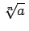

Erst die Einführung der irrationalen Zahlen ermöglicht es, jedem Punkt der Zahlengeraden eine Zahl zuzuordnen.
In den Lehrbüchern der Analysis wird eine exakte Definition der irrationalen Zahlen gegeben, z.B. durch Intervallschachtelung. Für die Anschauung genügt die Feststellung, daß die irrationalen Zahlen auf der Zahlengeraden die Punkte einnehmen, die als Lücken zwischen den rationalen Zahlen vorhanden sind, und daß jede irrationale Zahl durch einen nichtperiodischen unendlichen Dezimalbruch dargestellt werden kann.
Man nennt solche Wurzeln algebraische Irrationalitäten.
| Beispiel A |
|
Einfachste Beispiele für algebraische Irrationalitäten sind die reellen Wurzeln der Gleichungen , also Zahlen der Form , wenn sie nicht rational sind. |
| Beispiel B |
|
sind algebraische Irrationalitäten. |
Irrationale Zahlen, die keine algebraischen Irrationalitäten sind, nennt man transzendente Zahlen.
| Beispiel A |
|
sind transzendente Zahlen. |
| Beispiel B |
|
Die dekadischen Logarithmen der positiven ganzen Zahlen mit Ausnahme von Zahlen der Form 10n sind transzendente Zahlen. |
Die nichtganzzahligen Wurzeln der quadratischen Gleichung
werden quadratische Irrationalitäten genannt . Sie haben die Form .
| Beispiel |
|
Die Teilung einer Strecke a im Verhältnis des Goldenen Schnittes x/a =(a-x)/x führt im Falle a =1 auf die quadratische Gleichung . Die Lösung ist eine quadratische Irrationalität. Sie enthält die irrationale Zahl . |